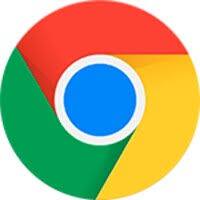

Durante as aulas de Paradigmas de Programação vamos aprender a desenvolver aplicações para Internet utilizando técnicas de HTML, CSS e ASP.NET.
Mosaic - Foi o primeiro navegador a rodar no Windows, fator determinante para a abertura da web para o público em geral. Marc Andreessen, o líder do time que desenvolveu o Mosaic, saiu da NCSA e, com Jim Clark, um dos fundadores da Silicon Graphics, Inc. (SGI) e outros quatro estudantes formados e nomeados da Universidade de Illinois, iniciaram o Mosaic Communications Corporation. Mosaic Communications finalmente se tornou a Netscape Communications Corporation, produzindo o Netscape Navigator.
Netscape - O Netscape trouxe todas as características que um browser moderno oferece nos dias de hoje, como por exemplo a navegação por abas, o bloqueio de pop ups, suporte a cookies e histórico de visitas, entre outros. Reinou absoluto durante anos, mas já em 2002 seus usuários se resumiam a alguns poucos gatos pingados. Um dos motivos foi o fato da Microsoft passar a incluir, já em 1995, o Internet Explorer junto com o sistema operacional Windows.
 Chrome - Depois de muita especulação, o Google finalmente se lança no mercado de navegadores em setembro do ano passado com o Chrome, um navegador 'projetado do zero' e com a promessa de ser mais rápido, seguro e estável que os concorrentes.